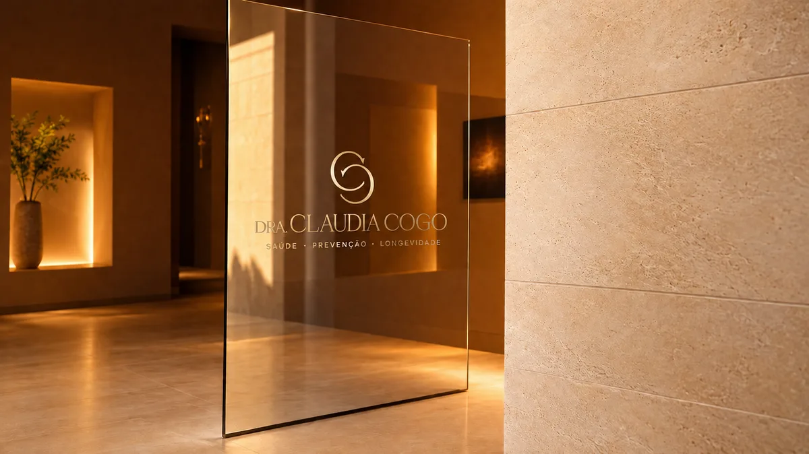

Formação
Graduação em Medicina — Santa Casa de Misericórdia de Vitória.
Residência em Clínica Médica — São Paulo.
Sobre a médica
Médica · Pós-graduada em Geriatria · CRM-ES 10090
São 17 anos de medicina desde a formatura na Santa Casa de Misericórdia de Vitória — um caminho que passou pela clínica médica e pela medicina intensiva, com milhares de horas ao lado de pacientes idosos e de suas famílias nos momentos mais delicados.
Agora, com pós-graduação em Geriatria pelo Hospital Israelita Albert Einstein (SP), a Dra. Claudia dedica essa bagagem ao consultório: a técnica de quem viveu a medicina intensiva, com o acolhimento de quem gosta de gente — e a didática de quem, há 7 anos, também forma novos médicos como professora universitária.
Fora do consultório, é mãe de três filhos. Para a medicina, leva a mesma dedicação de quem cuida do que é mais precioso.
Agendar uma conversaFormação e experiência
Graduação em Medicina — Santa Casa de Misericórdia de Vitória.
Residência em Clínica Médica — São Paulo.
Residência em Medicina Intensiva — Hospital Meridional (ES).
Pós-graduação em Geriatria — Hospital Israelita Albert Einstein (SP).
Cursos e atualizações constantes, com interesse especial em sarcopenia e polifarmácia.
17 anos de medicina, com rotina e coordenação de UTIs de grandes hospitais da Grande Vitória.
Atenção especial ao acompanhamento durante internações e ao seguimento após a alta da UTI.
Professora universitária há 7 anos, formando novos médicos na prática hospitalar.
Missão, visão e valores
A missão da Dra. Claudia é acompanhar de perto a saúde de cada paciente a partir dos 40 anos, unindo rigor clínico e cuidado humano, dentro e fora do consultório — para que viver mais tempo signifique viver melhor.
A visão que guia o consultório é redefinir o que é envelhecer bem em Vitória, por meio de uma medicina próxima, contínua e de excelência — que devolve o protagonismo ao paciente e dá segurança à família.

O espaço
Do primeiro contato à sala de atendimento, tudo foi pensado para transmitir calma e confiança — um ambiente à altura do cuidado que acontece dentro dele.
Imagens ilustrativas do projeto da marca.
Próximo passo
Agende uma consulta e conheça pessoalmente o trabalho da Dra. Claudia.